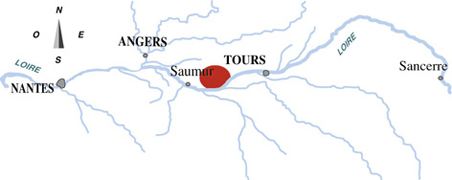

- Qu'est-ce que vous regardez ? C'est la carte routière ? - Non ! C'est la carte des vins. C'est pour éviter les bouchons ! - Fernand Reynaud Raymond Devos
Friand et plaisant ou structuré et puissant: deux personnalités de Bourgueil pour exprimer dans votre verre ses deux grands terroirs. Rabelais disait à son sujet, dans Gargantua,"Beuvez tousjours, vous ne mourrez jamais"
Localisation :
L'aire d'appellation s'étend sur 7 communes.A cet endroit, la vallée de la Loire est composée de sols variés, depuis les alluvions près du fleuve jusqu'aux sols argilo-calcaires proches de la côte de tuffeau

Cépage Bourgueil
Superficie: 1 400 ha
Chinon
Capitale de la Rabelaisie et du tourisme Bachique Chinon fête ses grands vins rouges tout en faisant tinter ses verres de rosé et de blanc.
Localisation :
L'aire d'appellation s'étend sur 19 communes, de part et d'autre de la Vienne jusqu'à sa confluence avec la Loire.
Cépage Chinon
Superficie: 2300 ha
Vouvray
Secs, tendres, mœlleux ou Fines bulles, les blancs de Vouvray vous révèlent leur exceptionnelle diversité.
Localisation :
L'aire d'appellation s'ouvre aux limites Est de l'agglomération tourangelle et s'étend sur 7 communes de la rive droite de la Loire et en bordure de son affluent, la Brenne.